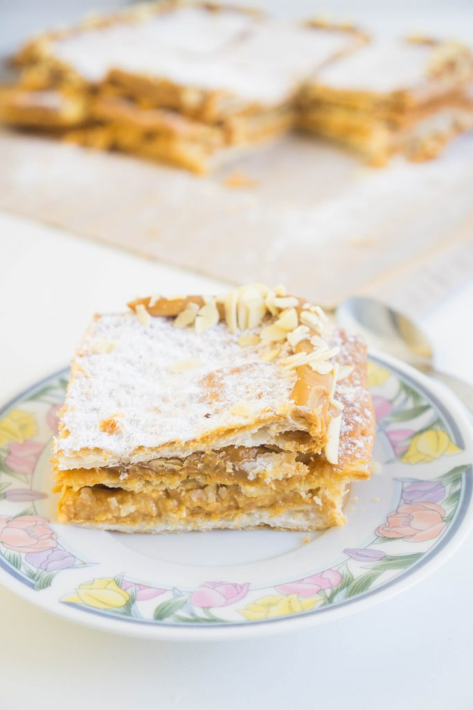

Mil Hojas

A completed Milhojas
Milhojas ("thousand sheets") are desserts made with stacked layers of puff pastry, filled with creme patissiere; cream; dulce de leche; a creamy mix of condensed milk, sugar, and vanilla; or white chocolate. They are part of the cuisines of Spain, Argentina, Bolivia, Ecuador, Colombia, Chile, El Salvador, Guatemala, Mexico, Peru, Portugal, UK (Gibraltar), Uruguay, and Venezuela.
Steps
- Preheat the oven to 220ºC (430ºF)
- Pierce each puff pastry sheet with a fork and cover all the surface with small dots. This will keep the puff pastry flat when baked.
- Place each puff pastry sheet on a non-stick oven sheet and bake each puff pastry sheet for 10 minutes until slightly brown. If you have a small oven bake the puff pastry one sheet at the time. Be careful because the oven must be insanely hot so more than 10 minutes can give you a burned sheet.
- Let the puff pastry cool down. Place one sheet and cover with dulce de leche. Repeat the process two times. Place the last sheet and cover with powdered sugar and decorate with dulce de leche and sliced almonds.